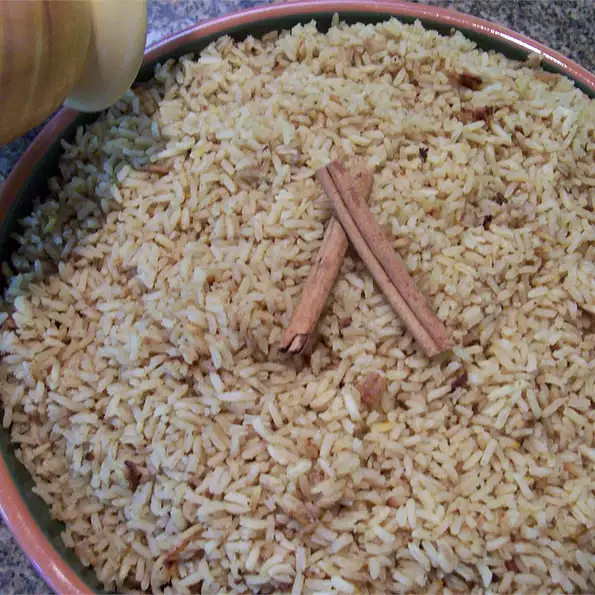

Malai Pulao

When I grew up as a child in India, I always enjoyed this wonderful festive rice which was served at weddings or other special occasions. Also good with Indian curry.
Ingredients
- ¼ teaspoon saffron threads or ground turmeric
- 6 cups boiling water
- ½ cup vegetable shortening
- 2 medium onions, chopped
- 2 (1 inch) pieces cinnamon stick
- 4 whole cloves
- 1 teaspoon ground ginger
- 2 tablespoons ground cumin
- 1 teaspoon garlic powder
- 10 cardamom seeds
- 4 ½ cups long-grain white rice
- 1 cup plain yogurt
- 2 teaspoons salt
Steps
- Place saffron threads into boiling water, set aside to steep.
- Melt the vegetable shortening in a large pot over medium-high heat. Stir in the onions, and cook until golden, about 5 minutes. Season with cinnamon sticks, cloves, ginger, cumin, garlic powder, and cardamom seeds. Cook for 3 to 4 minutes to release the flavor, stirring constantly.
- Pour in the rice and cook for 10 minutes, stirring constantly. Add the yogurt, saffron water, and salt. Bring to a simmer, then reduce heat to low. Cover pot with a cloth folded into 4 layers. Place a lid over the cloth and cook until the rice is done, about 20 minutes. Remove the cinnamon sticks, cloves, and cardamom seeds before serving.
Back to Top
Back to Main Menu